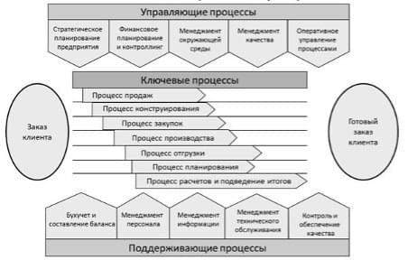

Практическая работа 6.
Моделирование бизнес-процессов. Функциональные модели бизнес-процессов предприятия в ARIS Express
Вопросы:
Виды бизнес-процессов. Группы бизнес-процессов. Границы бизнес-процессов. Диаграмма верхнего уровня Process landscape ARIS Express.
Задание:
-
Описать выбранный конкретный бизнес-процесс «то, что должно быть» в виде последовательности шагов (оформить в виде таблицы).
Пример описания бизнес-процесса «Организация прохождения заказа на предприятии»:
№
Шаг
Начало
Ответственный
Действие №1
Действие №2
Результат
1
Звонок клиента
Входящий звонок
Оператор контакт-центра
Поиск клиента по номеру телефона или Ф.И.О.
Регистрация новой карточки (если нет записи)
Идентификация клиента или регистрация новой карты
2
Проверка товарного наличия
Клиентский заказ
Оператор контакт-центра
Сотрудник складского помещения
Проверка наличия по базе данных, уточнение у работника склада
Озвучивание наличия, текущей цены, способов и
сроков доставки
Переход к презентации товара или к ожиданию его поступления
3
Презентация товара
Заказ клиента + товар в наличии
Оператор контакт-центра
Технический специалист
Проведение презентации, озвучка главных характеристик, ответы на вопросы клиента
Перевод в продажу, перевод в возвращение, отказ от продажи
Переход на этап оформления или завершения бизнес-процесса
4
Оформление заказа
Подтверждение заказа от клиента
Оператор контакт-центра
Сотрудник склада
Резерв товара на складе, оформление заявки на доставку, подготовка документации
Оповещение клиента о примерном или точном времени доставки
Окончание оформления и передача в службу доставки
-
Определить бизнес-процессы предприятия согласно варианту.
Разработать общую схему бизнес-процессов предприятия, например:
 Определить тип выбранного бизнес-процесса: основной (ключевой), управленческий или поддерживающий процесс.
Выделить бизнес-процессы, автоматизация которых принесет основную выгоду от внедрения информационных технологий в управление предприятием.
Построить в среде ARIS модель цепочки добавленного качества (Process landscape).
Литература: [Морозова, С.23-28]